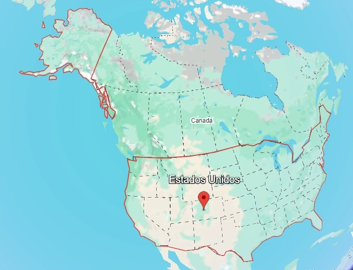

Describir el comportamiento de las variables de contaminación atmosférica mediante medidas estadísticas, tablas de frecuencia y gráficos que permitan identificar sus principales características y variaciones en las diferentes regiones de EE. UU. durante el periodo de estudio
Planteamiento del problema
La contaminación del aire de Estados Unidos constituye un problema ambiental de gran relevancia debido a sus efectos negativos en la salud humana, el ambiente y el desarrollo sostenible. Como caso de estudio, se tomó un conjunto de datos centrado en la contaminación atmosférica de Estados Unidos obtenidos de la plataforma Kaggle.
Mapa geográfico

Figura 1. Mapa geográfico de Estados Unidos. Fuente: Google Maps.
Objetivo general
Analizar el comportamiento de la contaminación atmosférica en los Estados Unidos mediante el uso de herramientas estadísticas descriptivas e inferenciales, con el fin de evaluar la calidad del aire e identificar patrones espaciales y temporales en los principales contaminantes criterio registrados en el territorio estadounidense.
OBJETIVOS ESPECÍFICOS
Comparar los niveles de contaminación del aire entre las distintas ciudades y estados de EE. UU., con el propósito de identificar diferencias significativas y determinar qué zonas presentan mayores concentraciones de los contaminantes analizados.
Analizar la evolución temporal de los contaminantes atmosféricos mediante series de tiempo y pruebas estadísticas, con el fin de identificar tendencias y variaciones estacionales durante el período de estudio